graph LR
%% Styling
classDef default fill:#f8fafc,stroke:#cbd5e1,stroke-width:2px,color:#334155,rx:8px,ry:8px,font-family:Inter;
classDef accent fill:#e0f2fe,stroke:#38bdf8,stroke-width:2px,color:#0f172a,rx:8px,ry:8px,font-family:Inter,font-weight:600;
linkStyle default stroke:#94a3b8,stroke-width:2px;
A[Design / Theory]:::accent --> B[Synthesis / Simulation]:::accent
B --> C[Characterization / Testing]:::accent
C --> D[Data Analysis / ML]:::accent
D --> A
Materials Genomics
Unit 1: Materials Data as a Design Space
Prof. Dr. Philipp Pelz
FAU Erlangen-Nürnberg


01. Title + course role in program
- Materials Genomics operationalizes discovery as a data-driven design process.
- Unit 1 builds conceptual scaffolding for later representation and modeling units.
02. What “genomics” means (and what it does NOT mean)
- Analogy: map compositional/structural diversity to property phenotypes.
- Not literal biology transfer; it is an organizational discovery metaphor.
03. Learning outcomes Unit 1
- Define design-space thinking and discovery-loop logic.
- Diagnose bias/leakage risks before model comparison.
04. Discovery bottleneck in classical materials workflows
- Classical trial-and-error is too slow for large combinatorial spaces.
- Data-driven prioritization reduces expensive experimental/DFT evaluations.
Where to Find Data?
- Manual collection – go through papers, extract data and tabulate (takes time)
- Accelerated collection – use of natural language processing (requires model and workflow)
- Pre-built databases – excellent when they exist in your area (may require access fees)
- Automated experiments – generate your own data over a given parameter space (expensive)
Data Extraction from the Literature
Leverage the vast literature of published papers
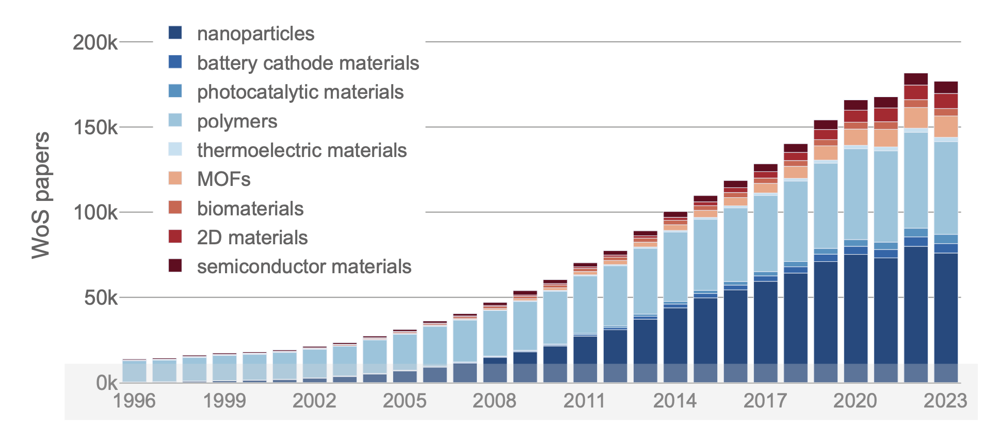
Data Extraction from the Literature
Many tailored workflows are available based on regular expressions and/or statistical models
NLP/LLM Data Extraction Workflow: Preprocessing -> LLM interaction -> Postprocessing!
{kind=link}
Examples include:
Why Share Data?
- Reproducibility – allow direct comparison with published literature beyond static tables and figures, e.g. raw spectra and diffraction patterns
- Reuse – facilitate meta-studies comparing results from multiple experiments, e.g. variation in UV-vis spectra for different samples
- Statistical models – power of machine learning depends on the quantity, quality, and diversity of training data
Common Forms of Data Sharing
- Supporting information with publications – often in the form of static pdf files (increasingly obsolete)
- Data repositories – most institutions offer data upload portals, but often lack guidelines and metadata, e.g. zip or tar files
- Community-specific repositories – best option if available, usually in a common format and searchable, with error detection
FAIR Data Standards
- Findable: discoverable by humans & machines with metadata & persistent identifiers (e.g. DOI)
- Accessible: archived in long-term storage with clear access terms (e.g. CC open license)
- Interoperable: exchangeable between different applications and systems using open file formats
- Reusable: well documented and curated with clear terms and conditions on usage
Findable
Accessible
Interoperable
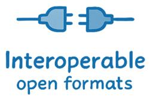
Reusable
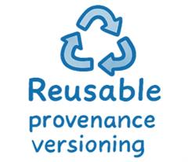
Data Security
Not all databases are public, e.g. companies and academic-industrial collaborations.
- Privacy: protection of personal data
- e.g. General Data Protection Regulation (GDPR)
- Encryption: protocols for storage and transfer
- e.g. public key encryption, hashing
- Access control: limiting users or computers
- e.g. passwords, firewalls
- Data integrity: avoid corruption or modification
- e.g. data provenance tracking, regular versioning
05. Data-rich turn in materials science
- Digitization of simulation and instrumentation created reusable data assets.
- Opportunity comes with data governance and quality burdens.
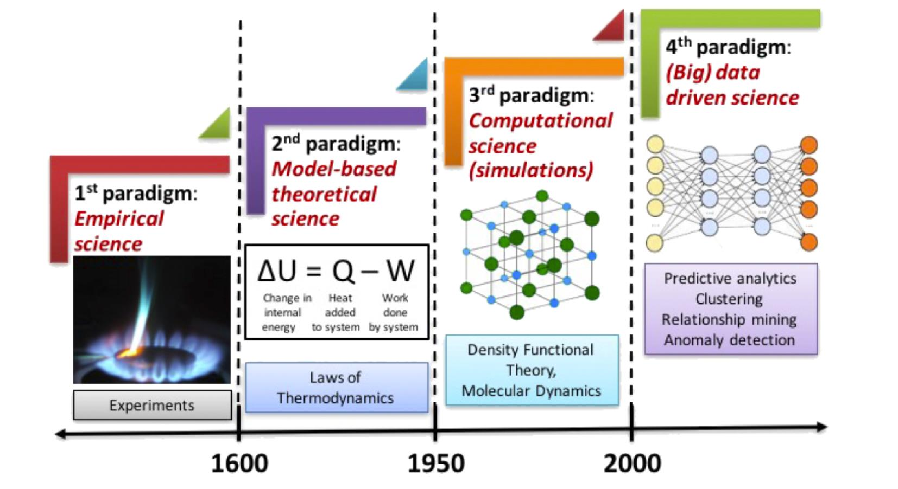
Crystallography in the Lead
Community Databases
Cambridge Structural Database
(from 1960)
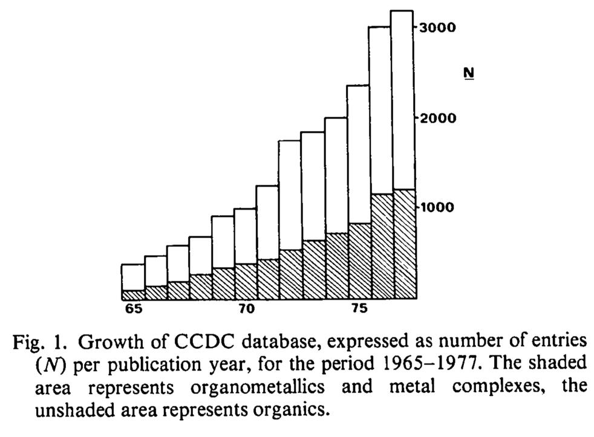
Standard Format
Human and Machine Readable
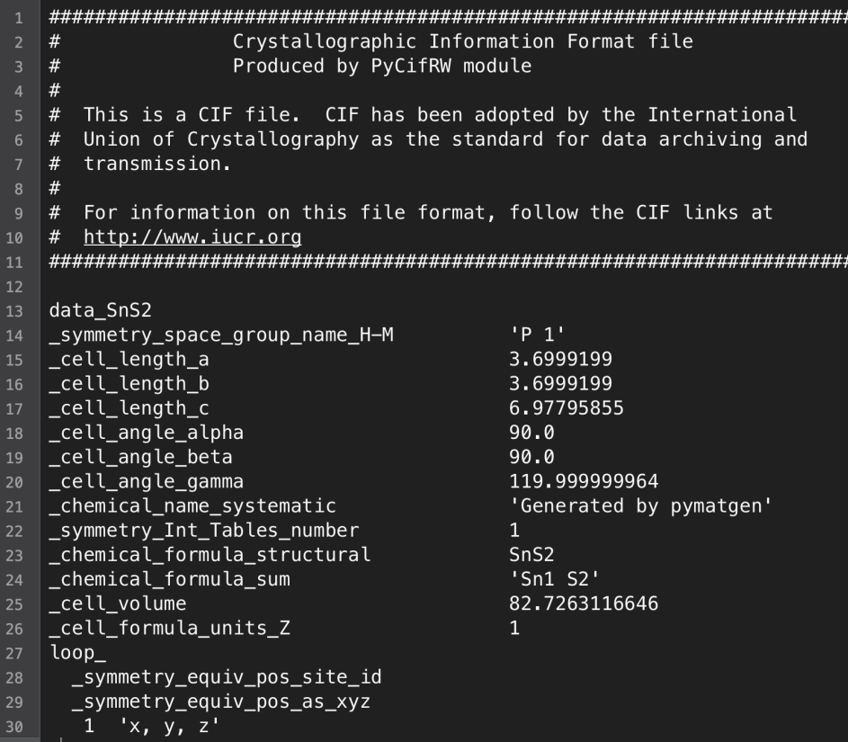
Crystallography in the Lead
- Compound composition, unit cell dimensions and symmetry
- Data collection and refinement information
- Atom coordinates
- Atomic displacement parameters
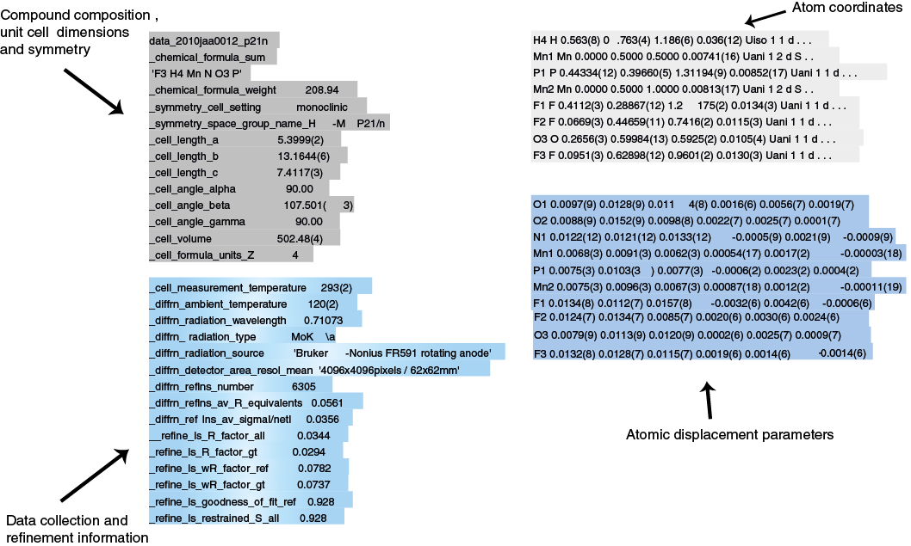
Crystallography in the Lead
Many open-source programs for cif visualisation
(including Miller indices, diffraction patterns…)
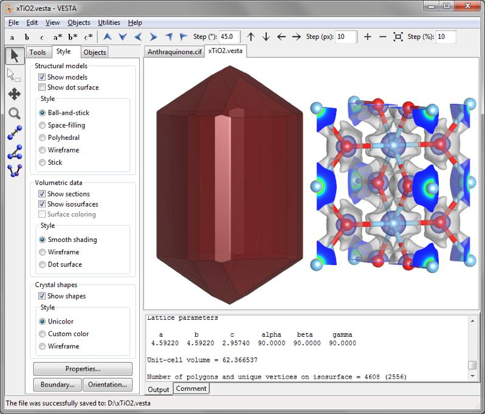
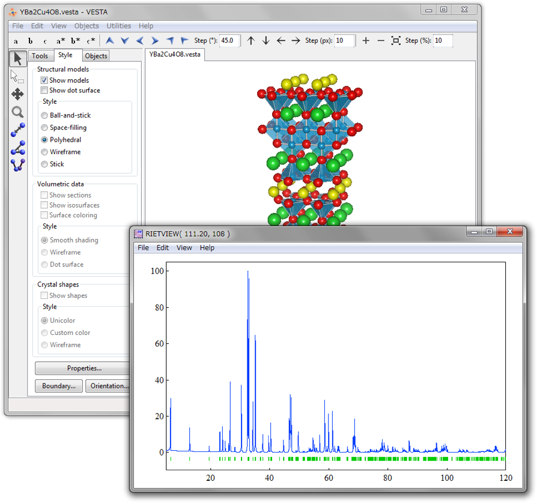
Example: General Repository
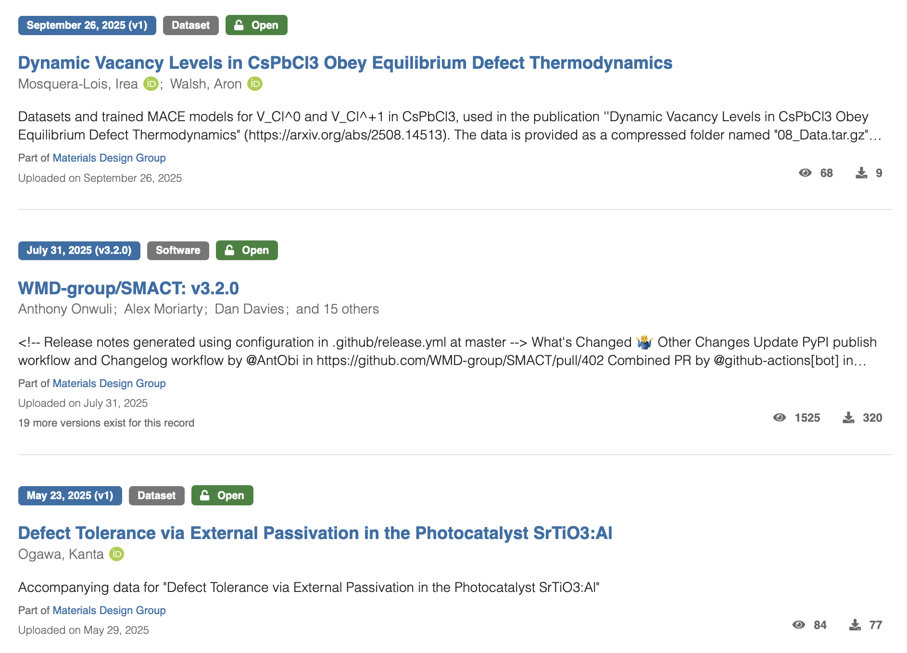
Example: Community Repository
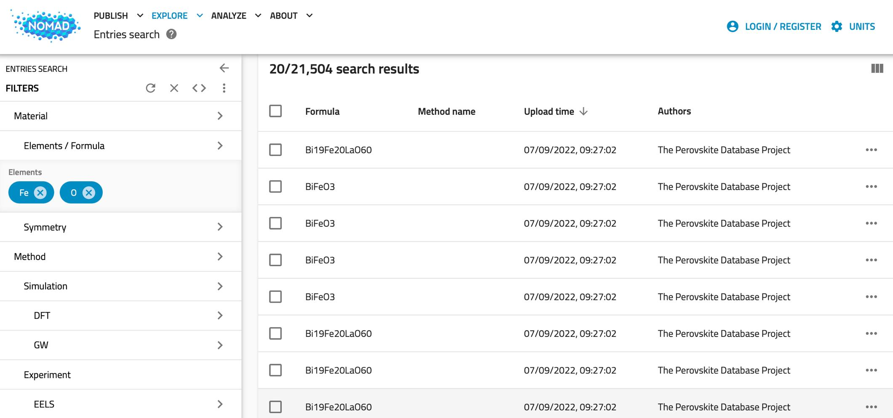
Example: Curated Repository
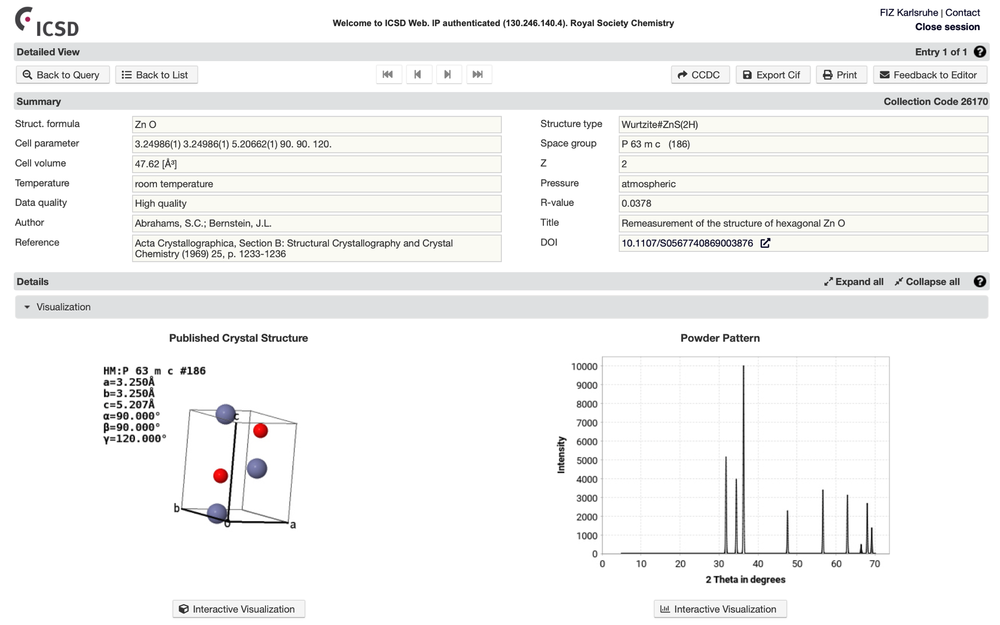
Example: Materials Modeling
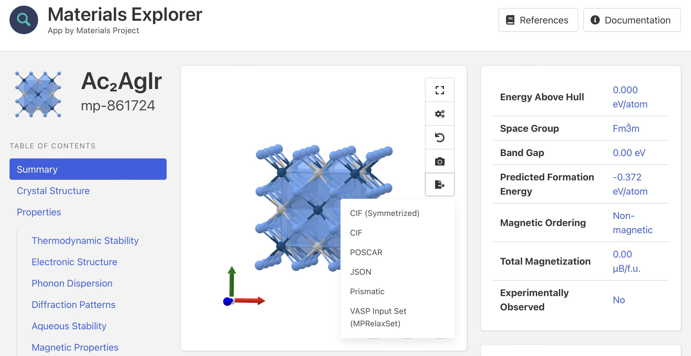
Example: Microscopy
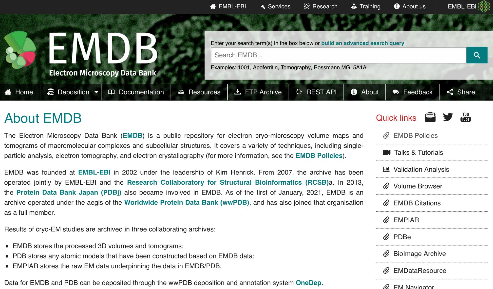
06. Where this course connects to MFML and ML-PC
- MFML supplies formal risk/validation language.
- ML-PC supplies experimental-data cautionary patterns complementary to MG.
07. 90-minute roadmap
- Motivation -> data assets -> representation assumptions -> validity -> exercise bridge.
- Focus on scientific reliability, not benchmark chasing.
08. Checkpoint prompt: “Where does ML add value here?”
- Ask where ML is additive versus redundant to existing pipelines.
- Force explicit statement of decision target and cost.
09. Periodic table + structure space as searchable manifold
- Treat composition+structure space as high-dimensional manifold.
- Search requires representations that preserve relevant invariances.
10. PSPP graph for materials discovery
- Processing
- Structure
- Properties
- Performance
- Discovery links these four pillars.
- MG emphasizes structure/property edges and candidate ranking.
graph LR
%% Styling
classDef default fill:#f8fafc,stroke:#cbd5e1,stroke-width:2px,color:#334155,rx:8px,ry:8px,font-family:Inter;
classDef primary fill:#fef08a,stroke:#eab308,stroke-width:2px,color:#422006,rx:12px,ry:12px,font-weight:bold,font-family:Inter;
classDef secondary fill:#dcfce7,stroke:#22c55e,stroke-width:2px,color:#052e16,rx:8px,ry:8px,font-family:Inter,font-weight:bold;
linkStyle default stroke:#94a3b8,stroke-width:2px;
P[Processing]:::secondary --> S[Structure]:::primary
S --> Pr[Properties]:::primary
Pr --> Pe[Performance]:::primary
Pe --> S
Pr --> P
11. Targets: formation energy, stability, bandgap, moduli, etc.
- Common targets: formation energy, hull distance, bandgap, moduli.
- Target semantics determine feasible model and metric choices.
12. Direct simulation vs surrogate modeling
Direct Simulation
- High fidelity
- Physical anchoring
- High cost (Time/Compute)
Surrogate Modeling
- Data-driven approximation
- Massive throughput gains
- Best for screening/optimization
- Best practice: active loop with high-fidelity validation of top candidates.
13. Screening logic: rank then validate
- Rank by expected utility, not only predicted mean.
- Incorporate uncertainty to avoid overconfident exploitation.
14. Why uncertainty is required for candidate prioritization
- Without uncertainty, candidate prioritization is fragile under shift.
- Use uncertainty for exploration-exploitation balance.
15. Domain knowledge constraints
- Charge neutrality, stability, symmetry act as hard/soft constraints.
- Constraints reduce implausible regions and improve sample efficiency.
16. First-principles + data-driven hybrid strategy
- Combine first-principles computations with learned surrogates.
- Hybrid loops enable rapid hypothesis generation with physical anchoring.
17. Micro-case: when pure data fit fails physically
- Show failure where model learns dataset origin instead of chemistry.
- Use this to motivate robust split design.
## 18. Database landscape (MP, OQMD, AFLOW, NOMAD)
- Materials Project, OQMD, AFLOW, NOMAD differ in scope/provenance.
- Document source and version for reproducible claims.
graph TD
%% Styling
classDef root fill:#f1f5f9,stroke:#94a3b8,stroke-width:2px,color:#0f172a,rx:8px,ry:8px,font-weight:bold,font-size:18px,font-family:Inter;
classDef category fill:#e0f2fe,stroke:#38bdf8,stroke-width:2px,color:#0f172a,rx:8px,ry:8px,font-weight:bold,font-family:Inter;
classDef item fill:#ffffff,stroke:#cbd5e1,stroke-width:2px,color:#334155,rx:8px,ry:8px,font-family:Inter;
linkStyle default stroke:#94a3b8,stroke-width:2px;
A[Materials Databases]:::root --> B[DFT-based]:::category
A --> C[Curation / Aggregation]:::category
B --> D[Materials Project]:::item
B --> E[OQMD]:::item
B --> F[AFLOW]:::item
C --> G[NOMAD]:::item
C --> H[Optimade]:::item
19. What each database gives / misses
- Databases provide broad coverage but uneven labels and metadata quality.
- Absence patterns are informative and can induce bias.
20. Data object types: composition, structure, process metadata
- Inputs include composition vectors, crystal graphs, process metadata.
- Different object types imply different model classes.
21. Thermodynamic quantities used in ML datasets
- Formation energy and hull distance are central for stability-aware tasks.
- Clarify units and reference states before modeling.
22. Representation problem statement
- Representation must encode invariance/equivariance requirements.
- Poor representation can dominate model error.
23. Classical descriptors vs learned representations (preview)
- Classical descriptors are interpretable but may saturate performance.
- Learned representations can capture nonlinear interactions.
24. Symmetry and invariance constraints
- Permutation, rotational, and lattice symmetries must be respected.
- Violation causes data inefficiency and spurious patterns.
25. Data quality dimensions
- Assess completeness, consistency, uncertainty, and provenance.
- Quality gates should be explicit before training.
26. Metadata and provenance importance
- Track workflow origin, method settings, and preprocessing steps.
- Provenance enables debugging and scientific trust.
27. Dataset shift across generation pipelines
- Shift arises across computational settings, labs, and synthesis protocols.
- Evaluate robustness with split strategies reflecting deployment.
28. Bias map: coverage, publication, synthesis bias
- Coverage and publication biases distort apparent performance.
- Report limitations with subgroup diagnostics.
29. Leakage map in materials datasets
- Family-level and polymorph-level leakage are common pitfalls.
- Use grouped splits by composition/structure families.
30. Recap: data assumptions that must be explicit
- State assumptions explicitly: target definition, split logic, and uncertainty handling.
- Assumptions are part of the model.
31. Task formulations in MG
- MG uses regression, classification, and ranking depending on decision stage.
- Task choice should mirror downstream screening action.
32. Regression baseline + error interpretation
- Start with simple baselines for sanity and residual analysis.
- Inspect error heterogeneity across chemical subspaces.
33. Classification/ranking formulations for screening
- Classification supports filter stages; ranking supports prioritization.
- Ranking metrics may be more relevant than MSE in screening.
34. Train/val/test under compositional grouping
- Random splits overestimate performance under compositional correlation.
- Use grouped/time-aware splits to emulate deployment.
35. OOD behavior in chemical space
- Evaluate extrapolation beyond seen chemistry/structure domains.
- OOD uncertainty should increase; if not, treat as warning signal.
36. Uncertainty-aware ranking concept
- Select by acquisition criteria combining mean and uncertainty.
- Avoid deterministic top-k overconfident traps.
37. Exploration vs exploitation (concept only)
- Pure exploitation misses novel regions; pure exploration wastes budget.
- Balance adaptively with uncertainty-aware acquisition.
38. Decision rule with uncertainty and cost
- Translate predictions to decisions via explicit utility/cost.
- Document thresholds and rationale.
39. Explainability expectations in scientific ML
- Scientific discovery requires interpretable hypotheses, not only scores.
- Use attribution and counterfactual checks cautiously.
40. Reproducibility checklist for discovery claims
- Share data split definitions, code, model version, and seeds.
- Reproducibility is part of scientific validity.
41. Common failure post-mortems
- Analyze false discoveries and missed candidates systematically.
- Turn failures into design rules for next cycle.
42. Exercise objective and dataset
- Reproduce a mini discovery pipeline on curated subset.
- End with one defendable recommendation.
43. Step 1: query and clean materials table
- Query and clean table; track missingness and units.
- Define train/val/test with leakage safeguards.
44. Step 2: feature table v1 (simple descriptors)
- Construct baseline descriptor set and document assumptions.
- Run a simple baseline model before complexity.
45. Step 3: baseline model + grouped split
- Evaluate with task-relevant metrics and uncertainty proxy.
- Compare grouped vs random split outcomes.
46. Step 4: error and bias diagnosis
- Diagnose one concrete bias artifact and propose mitigation.
- Quantify impact on candidate ranking.
47. Step 5: one uncertainty proxy and discussion
- Add uncertainty-aware selection and discuss changed priorities.
- Reflect on risk tolerance in discovery context.
48. What to report in notebook (scientific style)
- Include problem statement, split logic, metrics, error analysis, and recommendations.
- Avoid reporting only best score without context.
49. Unit summary: 10 exam-relevant statements
- Materials Genomics operationalizes discovery as a data-driven design process.
- Discovery loops reduce costs by prioritizing candidates before expensive validation.
- PSPP (Processing, Structure, Property, Performance) is the central paradigm of discovery.
- Surrogate models trade some fidelity for massive throughput gains in screening.
- Physical constraints (symmetry, charge) reduce the search space and improve efficiency.
- Uncertainty quantification is required to avoid overconfident exploitation.
- Data leakage (e.g., polymorphs) is a major risk in materials dataset design.
- Grouped splits (e.g., by composition) are necessary to test true generalization.
- Provenance is critical for scientific trust and reproducibility of data-driven claims.
- Decision rules should explicitly incorporate both model predictions and costs.
50. References + reading for Unit 2
- Data science in materials is interdisciplinary and explicitly tied to domain knowledge (Sandfeld Ch. 2.1).
- ML is a method family within a broader AI/data-science ecosystem; avoid buzzword conflation (Sandfeld Ch. 2.1; McClarren Ch. 1).
- Model trust requires explainability and uncertainty framing; “black-box by default” is not acceptable for scientific discovery (Neuer Ch. 1.1.2–1.1.3).
- Lecture: design-space thinking, dataset caveats, validity criteria, uncertainty-aware decision logic.
- Exercise: practical query/build/evaluate loop with one explicit bias diagnosis.
- Sandfeld Ch. 2.1–2.3
- Neuer Ch. 1.1.2–1.1.3
- McClarren Ch. 1.1 + 1.5
Bishop, Christopher M. 2006. Pattern Recognition and Machine Learning. Springer.
McClarren, Ryan G. 2021. Machine Learning for Engineers: Using Data to Solve Problems for Physical Systems. Springer.
Murphy, Kevin P. 2012. Machine Learning: A Probabilistic Perspective. MIT Press.
Neuer, Michael et al. 2024. Machine Learning for Engineers: Introduction to Physics-Informed, Explainable Learning Methods for AI in Engineering Applications. Springer Nature.
Sandfeld, Stefan et al. 2024. Materials Data Science. Springer.

© Philipp Pelz - Materials Genomics